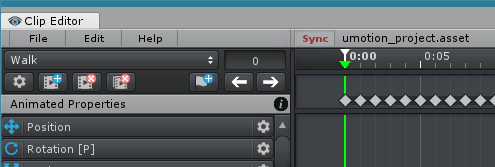
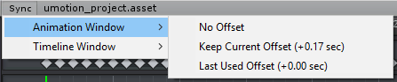

Unity Timeline Integration
UMotion can be used together with Unity's Timeline Editor or Unity's Animation Window. This is made possible by the Sync button in UMotion's Clip Editor.
Clip Editor - Sync button in the menu bar
When UMotion is synchronized:
- The Sync button turns red while synchronization is active.
- Scrubbing the frame cursor on one of the two applications will automatically update the other one.
- It is thus possible to preview animations in UMotion and Unity's Timeline/Animation Window at the same time.
- Starting/stopping animation playback is also synchronized.
A special mode of synchronization is editing animation clips used in a Unity Timeline sequence (see below). This is useful for editing cut scenes.
Synchronizing with Timeline/Animation Window
Let's think of a horse riding scenario. In such a scenario it is necessary to make ensure that the animation of the player that sits on the horse matches with the animation of the horse. With synchronization this task gets easy as you can preview the animation of the horse via Unity's Animation or Timeline Window at the same time while editing the player's animation using UMotion.
Enable Synchronization
In the UMotion Clip Editor, click on Sync. You have the option to synchronize either with Unity Timeline or with Unity's Animation Window. It is possible to synchronize the frame cursors with or without offset. Synchronizing with offset is useful when one animation should start playing before/after the other. You can either choose to use the offset the frame cursors currently have (in respect to each other) or by using the last used offset.
Clip Editor - Options to synchronize with Unity's Animation Window
Disable Synchronization
Click on the Sync button in UMotion or on the Preview button in Unity's Timeline or Animation Window to disables synchronization.
Unity Timeline: Edit Animation Clips Professional
With UMotion it is possible to edit animation clips that are currently used in Unity Timeline. This is useful when creating and fine tuning cut scene sequences.
Warning: Please note that in Unity 2017.3 and below, Timeline is not playing root motion animations correctly. The root motion applied while played in Timeline can be slightly more or slightly less than the root motion that is applied when editing the animation clip using UMotion. This problem is fixed in Unity 2018.1 and above. More information: Known Issue 10
Editing a Unity Timeline clip:
- If the animation clip was already created/edited using UMotion open the according UMotion project (click on File ➔ Open Project).
- If not, create a new UMotion project (click on File ➔ New Project). Make sure to select the same animation type (humanoid, generic or legacy) as the animation clip you want to edit.
- Select the animation clip that should be edited in Unity Timeline by clicking on it with the left mouse button.
- In the UMotion Clip Editor, click on Sync ➔ Timeline Window ➔ Edit Selected Clip.
- If you created a new project in the first step, UMotion will now guide you through setting up the project so that the animation can be edited.
Clip Editor - Synchronize with Unity Timeline
UMotion is now synchronized with Unity Timeline and you can start editing the animation clip.
Things to consider:
- UMotion temporarily deactivates the binded GameObject from the related animation track in Unity Timeline. This is necessary so that UMotion can correctly play animations on that GameObject. As soon as synchronization is stopped the GameObject is activated again.
- Only the currently edited animation clip of the same animation track can be previewed. Clips on other tracks are still previewed as usual.
- While editing an animation clip, the blend settings for that timeline clip are ignored.
- The extrapolation settings of the currently edited timeline clip are ignored. Use UMotion's Playback Navigation settings to e.g. enable looping in preview mode.
- The speed multiplier and the root motion offsets are considered correctly.
As soon as you finished editing the animation clip export the animation (see Import / Export). Make sure to select the same export directory (in the Project Settings) as where the original animation clip is stored at. When exported correctly, Unity Timeline will automatically use the modified version of the animation clip.
Clicking on the Sync button in UMotion or on the Preview button in Unity Timeline disables the synchronization.